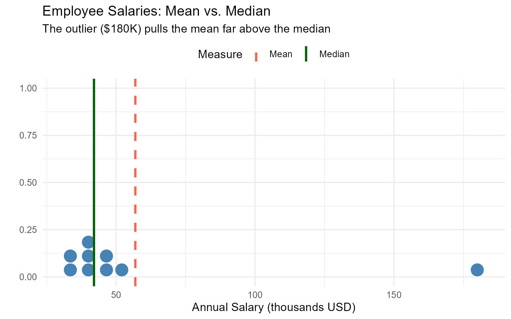
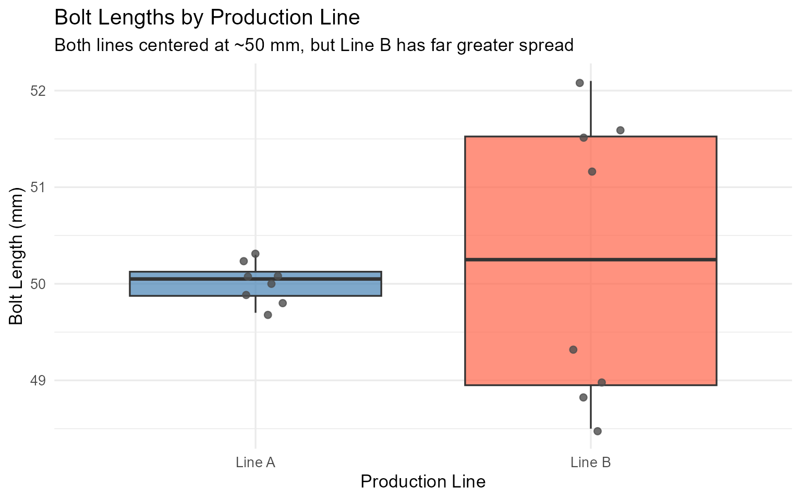
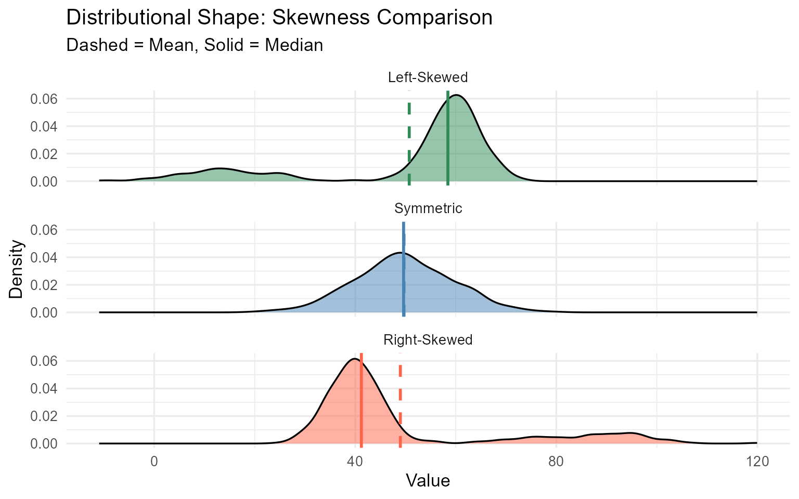
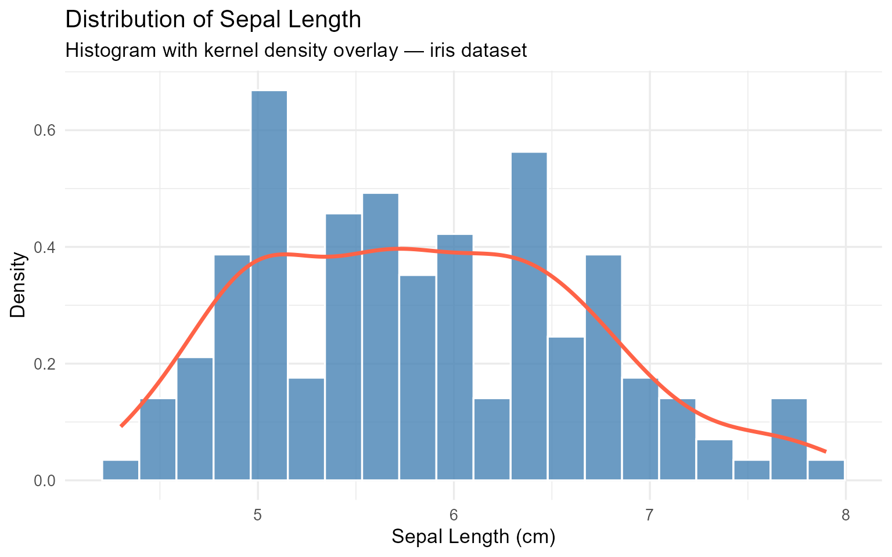
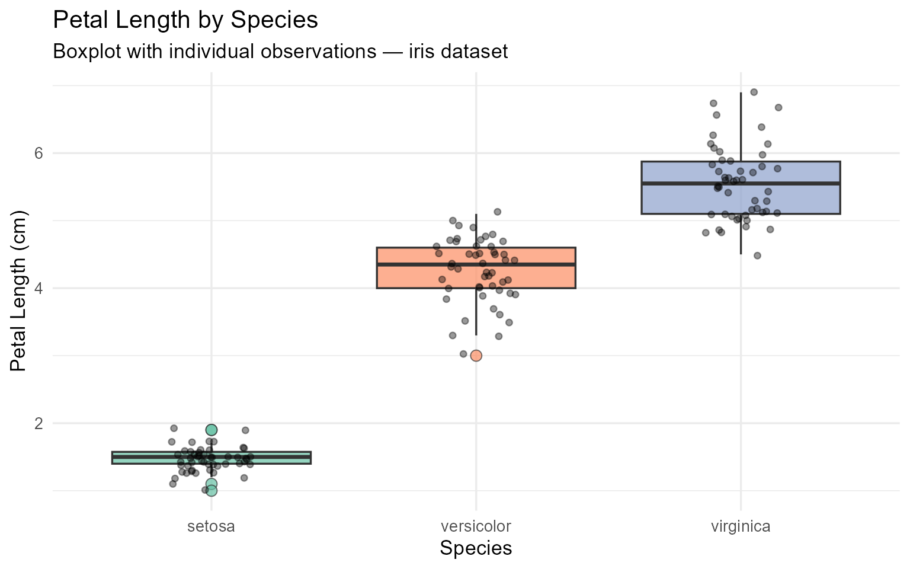
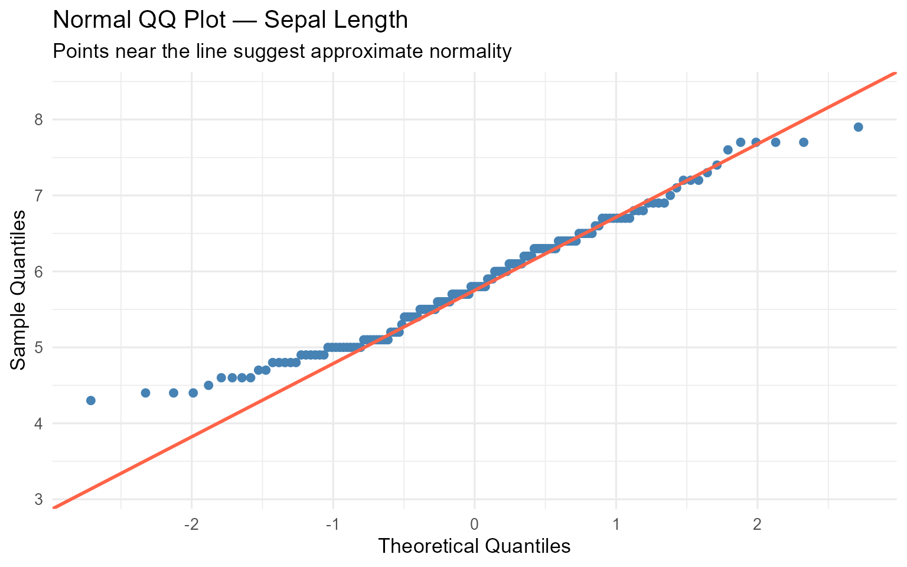
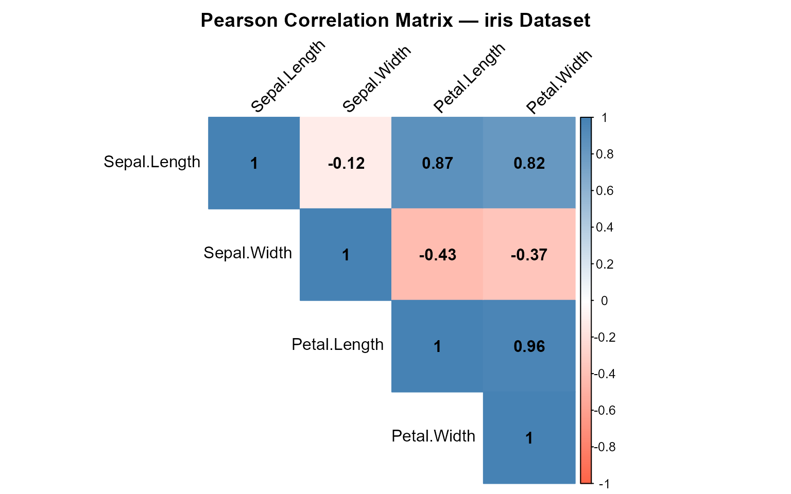
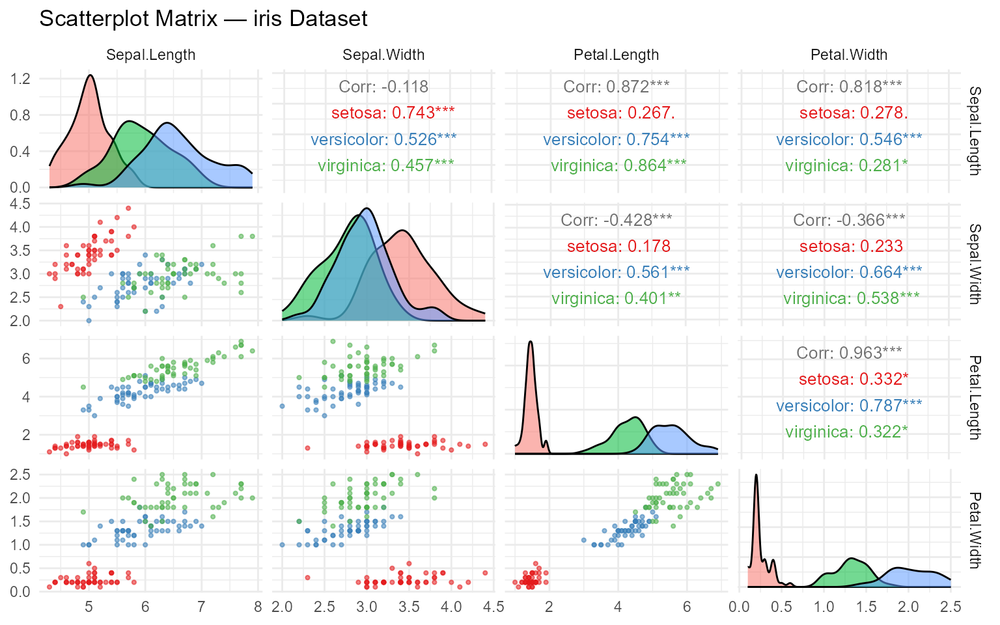
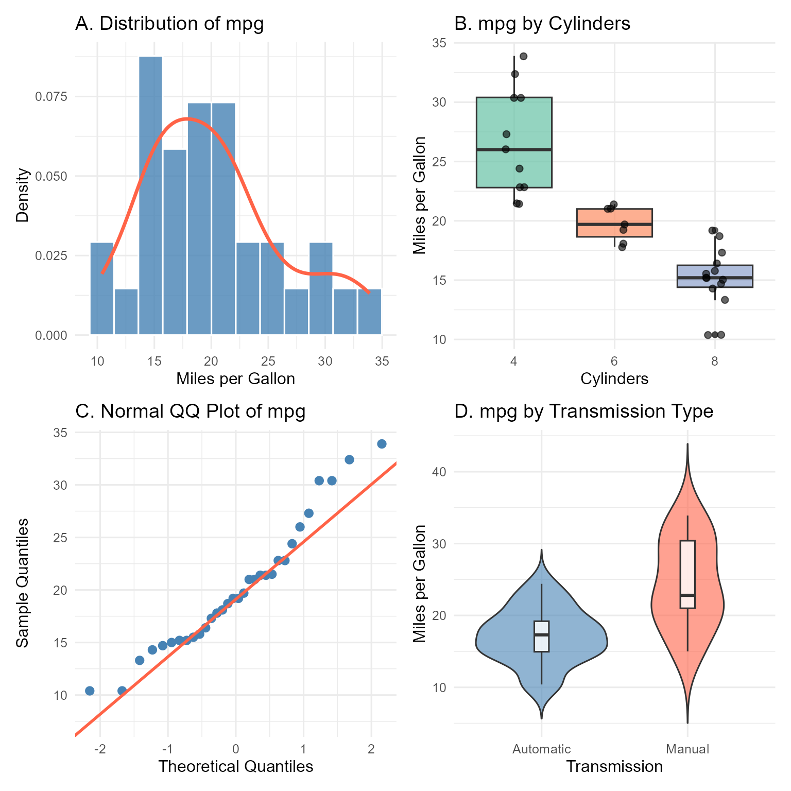
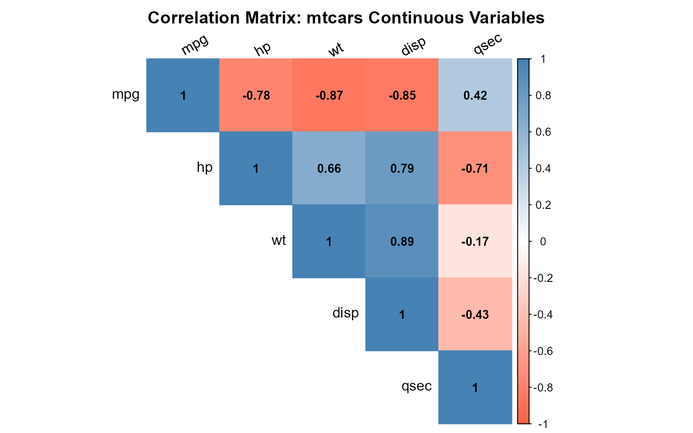

Mean: 56.89 thousand USDMedian: 42 thousand USDMode: 32 (appears once — effectively no mode)
Descriptive statistics is the branch of statistics concerned with summarizing and communicating the key features of a dataset without making inferences beyond the data at hand. Before fitting models, testing hypotheses, or making predictions, a data scientist must first develop an intimate understanding of their data — its center, its spread, its shape, and its relationships.
This chapter covers:
By the end of this chapter, you will be able to:
The first question we ask about any variable is: Where is the data centered? Measures of central tendency answer this by identifying a single representative value around which the observations cluster. The three most widely used measures are the mean, the median, and the mode — and the choice among them is never arbitrary. It depends on the scale of measurement, the shape of the distribution, and the presence of outliers.
The arithmetic mean (commonly called “the average”) is the sum of all observed values divided by the number of observations. For a sample of \(n\) values \(x_1, x_2, \ldots, x_n\):
\[\bar{x} = \frac{1}{n} \sum_{i=1}^{n} x_i\]
For a population of size \(N\), we use the symbol \(\mu\):
\[\mu = \frac{1}{N} \sum_{i=1}^{N} x_i\]
The mean minimizes the sum of squared deviations: \(\sum(x_i - \bar{x})^2\) is smaller for \(\bar{x}\) than for any other value. This makes it the least squares center of the data. However, the mean is sensitive to extreme values (outliers), because every observation contributes equally to the sum.
The median is the middle value when data are sorted in ascending order. For \(n\) observations:
\[\text{Median} = \begin{cases} x_{(n+1)/2} & \text{if } n \text{ is odd} \\ \frac{x_{(n/2)} + x_{(n/2+1)}}{2} & \text{if } n \text{ is even} \end{cases}\]
The median is robust to outliers — it is insensitive to the exact values of extreme observations. This makes it the preferred measure of center for skewed distributions such as income, house prices, and reaction times.
The mode is the value (or values) that appear most frequently in the data. It is the only measure of central tendency applicable to nominal (categorical) data. A distribution may be unimodal (one mode), bimodal (two modes), or multimodal.
| Situation | Recommended Measure |
|---|---|
| Symmetric distribution, no outliers | Mean |
| Skewed distribution or outliers present | Median |
| Categorical or nominal data | Mode |
| Reporting income, house prices, reaction times | Median |
| Reporting height, temperature, test scores (approx. symmetric) | Mean |
When observations carry different importance (weights \(w_i\)), the weighted mean accounts for this:
\[\bar{x}_w = \frac{\sum_{i=1}^{n} w_i x_i}{\sum_{i=1}^{n} w_i}\]
This is commonly used in survey research (sampling weights), grade calculation, and portfolio analysis.
Example 1.1. A researcher collects the following annual salaries (in thousands of USD) from 9 employees in a small firm:
\[32, \; 35, \; 38, \; 40, \; 42, \; 45, \; 48, \; 52, \; 180\]
Step 1 — Mean: \[\bar{x} = \frac{32+35+38+40+42+45+48+52+180}{9} = \frac{512}{9} \approx 56.9 \text{ thousand}\]
Step 2 — Median (n = 9, odd → middle value is the 5th): \[\text{Median} = 42 \text{ thousand}\]
Step 3 — Mode: No value repeats, so this dataset has no mode.
Interpretation: The mean ($56.9K) is substantially higher than the median ($42K) because of the outlier salary of $180K. The median better represents the “typical” employee salary in this firm. This illustrates why the median is preferred when data is right-skewed or contains outliers.
Mean: 56.89 thousand USDMedian: 42 thousand USDMode: 32 (appears once — effectively no mode)
Code explanation:
mean() and median() are base R functions.get_mode() manually because R’s built-in mode() returns the storage type, not the statistical mode.geom_vline() adds vertical reference lines, making the gap between mean and median visually apparent.scale_color_manual() call controls line colors via a named vector.Try modifying: Replace 180 with 55 (removing the outlier) and observe how the mean and median converge.
The following values represent the number of publications per faculty member in a department:
\[3, 5, 7, 2, 8, 5, 12, 5, 6, 4\]
A student’s course grades are: Midterm (weight = 30%) = 78, Final (weight = 50%) = 85, Project (weight = 20%) = 91.
Compute the weighted mean grade. How does it compare to the simple arithmetic mean?
Knowing where data is centered is necessary but not sufficient. Two datasets can have identical means yet look completely different — one tightly clustered, the other wildly spread. Measures of dispersion quantify the variability or spread of data around the center. This is critical in data science: high variability in model predictions indicates instability; high variability in features may require normalization.
The simplest measure of spread: the difference between the maximum and minimum values.
\[\text{Range} = x_{\max} - x_{\min}\]
The range uses only two data points and is highly sensitive to outliers. It is most useful as a quick preliminary check.
The IQR is the range of the middle 50% of the data — the distance between the 75th percentile (Q3) and the 25th percentile (Q1):
\[\text{IQR} = Q_3 - Q_1\]
The IQR is robust to outliers because it ignores the tails. It is the basis for the boxplot and for the standard outlier detection rule: an observation is a potential outlier if it falls below \(Q_1 - 1.5 \times \text{IQR}\) or above \(Q_3 + 1.5 \times \text{IQR}\).
The variance measures the average squared deviation from the mean. For a sample:
\[s^2 = \frac{1}{n-1} \sum_{i=1}^{n} (x_i - \bar{x})^2\]
We divide by \(n-1\) (not \(n\)) to obtain an unbiased estimator of the population variance \(\sigma^2\). This correction is known as Bessel’s correction. Squaring the deviations ensures all contributions are positive and penalizes large deviations more heavily.
The standard deviation is the square root of the variance, returning units to the original scale of the data:
\[s = \sqrt{\frac{1}{n-1} \sum_{i=1}^{n} (x_i - \bar{x})^2}\]
It is the most widely used measure of dispersion and is interpretable as the “typical” distance of observations from the mean.
The CV expresses the standard deviation as a percentage of the mean, enabling comparisons of variability across variables with different units or scales:
\[\text{CV} = \frac{s}{\bar{x}} \times 100\%\]
For example, comparing the variability of blood pressure (measured in mmHg) to heart rate (beats per minute) using CV makes the comparison unit-free.
Example 1.2. Two machine production lines produce bolts with the following lengths (mm):
Both lines have \(\bar{x}_A \approx \bar{x}_B \approx 50\) mm. But the quality implications differ dramatically.
Line A: \[s_A^2 = \frac{(0.1^2 + 0.2^2 + 0.3^2 + 0^2 + 0.1^2 + 0.2^2 + 0.1^2 + 0.3^2)}{7} \approx 0.039, \quad s_A \approx 0.197 \text{ mm}\]
Line B: \[s_B \approx 1.35 \text{ mm}\]
Despite identical means, Line B’s standard deviation is nearly 7 times larger. Line A produces consistent, high-quality bolts; Line B has unacceptable variability that would cause assembly failures.
| Measure | Line A | Line B |
|---|---|---|
| Mean | 50.0125 | 50.2500 |
| Range | 0.6000 | 3.6000 |
| IQR | 0.2500 | 2.5750 |
| Variance | 0.0412 | 2.1914 |
| Std. Deviation | 0.2031 | 1.4803 |
| CV (%) | 0.4061 | 2.9460 |

Code explanation:
var(), sd(), IQR(), and range() are all base R functions.diff(range(x)) computes the range efficiently: range() returns min and max, diff() subtracts them.kable() + kable_styling() produce a clean, styled comparison table suitable for reports.geom_jitter() overlays raw data points on the boxplot, revealing the actual observations behind the summary.Using the salary data from Exercise 1.1 (\(3, 5, 7, 2, 8, 5, 12, 5, 6, 4\) publications):
Two university courses each have a class mean of 75% on the midterm. Course A has \(s = 5\), Course B has \(s = 18\).
The mean and standard deviation describe where data is centered and how spread out it is, but they say nothing about the shape of the distribution. Two datasets can share the same mean and variance yet differ in symmetry and tail heaviness. Measures of shape — skewness and kurtosis — capture these features and are essential for deciding which statistical methods are appropriate (many assume normality) and for understanding the nature of extreme observations.
Skewness measures the degree and direction of asymmetry in a distribution. The sample skewness is:
\[\text{Skewness} = \frac{n}{(n-1)(n-2)} \sum_{i=1}^{n} \left(\frac{x_i - \bar{x}}{s}\right)^3\]
| Skewness Value | Shape | Relationship |
|---|---|---|
| \(\approx 0\) | Symmetric | Mean \(\approx\) Median \(\approx\) Mode |
| \(> 0\) | Right-skewed (positive) | Mean \(>\) Median \(>\) Mode |
| \(< 0\) | Left-skewed (negative) | Mean \(<\) Median \(<\) Mode |
Right skew (positive skew) is common in income, wealth, reaction times, and biological measurements where values cannot go below zero but can take large positive values. Left skew occurs in data like scores on an easy exam (most cluster near the maximum).
As a rule of thumb: |skewness| < 0.5 is approximately symmetric; 0.5–1.0 is moderately skewed; > 1.0 is highly skewed.
Kurtosis measures the “tailedness” of a distribution — the concentration of probability in the tails relative to a normal distribution. The excess kurtosis (relative to the normal distribution, which has kurtosis = 3) is:
\[\text{Excess Kurtosis} = \frac{n(n+1)}{(n-1)(n-2)(n-3)} \sum_{i=1}^{n}\left(\frac{x_i-\bar{x}}{s}\right)^4 - \frac{3(n-1)^2}{(n-2)(n-3)}\]
| Excess Kurtosis | Distribution Type | Description |
|---|---|---|
| \(= 0\) | Mesokurtic | Normal-like tails |
| \(> 0\) | Leptokurtic | Heavy tails, peaked center (e.g., Student’s \(t\)) |
| \(< 0\) | Platykurtic | Light tails, flatter shape (e.g., Uniform) |
High (positive) kurtosis warns of tail risk — a higher probability of extreme values than the normal distribution predicts. This is critical in financial risk management and anomaly detection.
Example 1.3. A researcher measures response times (milliseconds) for a cognitive task across 200 participants. Summary statistics:
Interpretation:
| Distribution | Mean | SD | Skewness | Excess Kurtosis |
|---|---|---|---|---|
| Symmetric | 49.70 | 9.72 | 0.021 | 0.016 |
| Right-Skewed | 48.98 | 19.69 | 1.551 | 1.063 |
| Left-Skewed | 50.74 | 19.13 | -1.487 | 0.803 |

Code explanation:
skewness() and kurtosis() come from the moments package. Note that kurtosis() returns the raw kurtosis (normal = 3), so we subtract 3 for excess kurtosis.facet_wrap(~dist, ncol = 1) creates stacked panels — useful for comparing shapes visually.factor() call controls the panel order for logical display (left → symmetric → right).Given the following frequency distribution of exam scores, determine:
| Score Range | Frequency |
|---|---|
| 40–50 | 2 |
| 50–60 | 8 |
| 60–70 | 25 |
| 70–80 | 35 |
| 80–90 | 20 |
| 90–100 | 10 |
Numerical summaries are powerful, but they inevitably compress information. A single summary statistic can mask patterns that are immediately obvious in a plot. The famous Anscombe’s Quartet (1973) demonstrates that four datasets with nearly identical means, variances, correlations, and regression lines can look completely different when plotted. Visualization is not optional — it is an indispensable component of responsible data analysis.
A histogram divides the range of values into bins and plots the count (or proportion) of observations in each bin. The choice of bin width significantly affects interpretation: too few bins hides structure; too many bins shows noise as pattern. Kernel density estimates (KDE) provide a smooth continuous estimate of the distribution without imposing arbitrary bins.
A boxplot (box-and-whisker plot) summarizes a distribution using five numbers: minimum, Q1, median, Q3, and maximum (with outliers plotted separately). Boxplots excel at comparing distributions across groups and at identifying outliers. Their weakness is that they can hide bimodality or other complex shapes.
For categorical data, bar charts display the frequency or proportion of each category. Unlike histograms, the bars do not touch (no ordering implied for nominal data). Frequency tables provide the raw counts and relative frequencies underlying any bar chart.
A QQ plot compares the quantiles of observed data against the quantiles of a theoretical distribution (usually normal). If the data follow that distribution, points fall approximately on a straight diagonal line. Deviations from the line reveal departures from normality — S-curves indicate skewness, heavy tails appear as points curving away at the ends.



Code explanation:
after_stat(density) in the histogram aesthetic maps bar heights to density (not count), so the density curve overlays correctly.stat_qq() + stat_qq_line() produce a QQ plot entirely within ggplot2 — no additional packages needed.scale_fill_brewer(palette = "Set2") uses a colorblind-friendly palette from ColorBrewer.Using the mtcars dataset in R:
mpg (miles per gallon). Experiment with 5, 15, and 30 bins. Which bin count best reveals the distribution’s shape?mpg grouped by number of cylinders (cyl). What pattern do you observe?mpg and assess whether it follows a normal distribution.Real-world datasets rarely consist of a single variable. Data scientists routinely work with dozens or hundreds of features simultaneously. Multivariate descriptive statistics extend single-variable summaries to describe relationships between variables — whether two variables tend to move together (covariance, correlation), and how to summarize many variables at once.
Covariance measures the direction of the linear relationship between two variables \(X\) and \(Y\):
\[s_{XY} = \frac{1}{n-1} \sum_{i=1}^{n} (x_i - \bar{x})(y_i - \bar{y})\]
Covariance has a critical limitation: its magnitude depends on the scales of \(X\) and \(Y\), making direct comparisons across variable pairs impossible.
The Pearson correlation coefficient \(r\) standardizes covariance to a dimensionless scale from \(-1\) to \(+1\):
\[r_{XY} = \frac{s_{XY}}{s_X \cdot s_Y} = \frac{\sum(x_i - \bar{x})(y_i - \bar{y})}{\sqrt{\sum(x_i-\bar{x})^2 \cdot \sum(y_i-\bar{y})^2}}\]
| Magnitude of \(r\) | Strength of Linear Relationship |
|---|---|
| 0.00 – 0.19 | Very weak or none |
| 0.20 – 0.39 | Weak |
| 0.40 – 0.59 | Moderate |
| 0.60 – 0.79 | Strong |
| 0.80 – 1.00 | Very strong |
Critical caveat: Pearson’s \(r\) measures only linear relationships. Two variables can be strongly related (e.g., quadratically) yet have \(r \approx 0\). Always visualize with a scatterplot alongside computing \(r\).
When data violates the assumptions of Pearson’s \(r\) (non-normality, outliers, or ordinal scale), Spearman’s \(\rho\) provides a robust alternative based on the ranks of the data rather than raw values:
\[\rho = 1 - \frac{6 \sum d_i^2}{n(n^2 - 1)}\]
where \(d_i\) is the difference in ranks for observation \(i\).
For \(p\) variables, the covariance matrix \(\mathbf{\Sigma}\) is a \(p \times p\) matrix where the diagonal contains variances and off-diagonal entries contain pairwise covariances. The correlation matrix \(\mathbf{R}\) standardizes this to show all correlations. These matrices are fundamental to multivariate methods like PCA (Chapter 7) and linear regression (Chapter 10).
Example 1.4. For four students, compute the correlation between study hours (\(X\)) and exam score (\(Y\)):
| Student | Hours (\(X\)) | Score (\(Y\)) |
|---|---|---|
| 1 | 2 | 55 |
| 2 | 4 | 70 |
| 3 | 6 | 80 |
| 4 | 8 | 90 |
\(\bar{x} = 5\), \(\bar{y} = 73.75\)
\[\sum(x_i-\bar{x})(y_i-\bar{y}) = (-3)(-18.75)+(-1)(-3.75)+(1)(6.25)+(3)(16.25) = 56.25+3.75+6.25+48.75 = 115\]
\[s_X = \sqrt{\frac{20}{3}} \approx 2.582, \quad s_Y = \sqrt{\frac{306.75}{3}} \approx 10.11\]
\[r = \frac{115/3}{2.582 \times 10.11} \approx \frac{38.33}{26.10} \approx 0.997\]
This near-perfect positive correlation confirms a strong linear relationship between study time and exam performance.
Sepal.Length Sepal.Width Petal.Length Petal.Width
Sepal.Length 1.000 -0.118 0.872 0.818
Sepal.Width -0.118 1.000 -0.428 -0.366
Petal.Length 0.872 -0.428 1.000 0.963
Petal.Width 0.818 -0.366 0.963 1.000

Code explanation:
cor(iris_num, method = "pearson") computes the full correlation matrix. Change to "spearman" for rank-based correlation.corrplot() visualizes the matrix with colors encoding strength and direction; addCoef.col overlays the numeric values.ggpairs() from GGally creates a comprehensive pairs plot: scatterplots (lower), correlations by species (upper), and density distributions (diagonal) — all in one call.Using the mtcars dataset:
hp (horsepower) and mpg (fuel efficiency). Do they differ substantially? Why?mpg, hp, wt, and qsec. Which pair has the strongest relationship?ggpairs plot for these four variables, colored by number of cylinders (cyl). Describe any multivariate patterns you observe.The Anscombe Quartet is built into R as anscombe. It contains four pairs of variables (x1/y1, x2/y2, x3/y3, x4/y4).
mtcars DatasetIn this lab, you will apply all descriptive statistics concepts from this chapter to a real-world dataset — the mtcars dataset, containing specifications and performance data for 32 automobiles from the 1974 Motor Trend magazine. The goal is to build a complete descriptive profile of the data, practicing the full workflow from initial exploration to visual communication of findings.
| mpg | cyl | disp | hp | drat | wt | qsec | vs | am | gear | carb | |
|---|---|---|---|---|---|---|---|---|---|---|---|
| Mazda RX4 | 21.0 | 6 | 160 | 110 | 3.90 | 2.620 | 16.46 | 0 | 1 | 4 | 4 |
| Mazda RX4 Wag | 21.0 | 6 | 160 | 110 | 3.90 | 2.875 | 17.02 | 0 | 1 | 4 | 4 |
| Datsun 710 | 22.8 | 4 | 108 | 93 | 3.85 | 2.320 | 18.61 | 1 | 1 | 4 | 1 |
| Hornet 4 Drive | 21.4 | 6 | 258 | 110 | 3.08 | 3.215 | 19.44 | 1 | 0 | 3 | 1 |
| Hornet Sportabout | 18.7 | 8 | 360 | 175 | 3.15 | 3.440 | 17.02 | 0 | 0 | 3 | 2 |
| Valiant | 18.1 | 6 | 225 | 105 | 2.76 | 3.460 | 20.22 | 1 | 0 | 3 | 1 |
Dimensions: 32 rows x 11 columnsVariable descriptions:
| Variable | Description | Type |
|---|---|---|
mpg |
Miles per gallon (fuel efficiency) | Continuous |
cyl |
Number of cylinders | Categorical (4, 6, 8) |
disp |
Displacement (cu.in.) | Continuous |
hp |
Gross horsepower | Continuous |
wt |
Weight (1000 lbs) | Continuous |
am |
Transmission (0 = automatic, 1 = manual) | Binary |
gear |
Number of forward gears | Categorical |
| n | mean | sd | median | min | max | skew | kurtosis | |
|---|---|---|---|---|---|---|---|---|
| mpg | 32 | 20.091 | 6.027 | 19.200 | 10.400 | 33.900 | 0.611 | -0.373 |
| hp | 32 | 146.688 | 68.563 | 123.000 | 52.000 | 335.000 | 0.726 | -0.136 |
| wt | 32 | 3.217 | 0.978 | 3.325 | 1.513 | 5.424 | 0.423 | -0.023 |
| disp | 32 | 230.722 | 123.939 | 196.300 | 71.100 | 472.000 | 0.382 | -1.207 |
Interpretation guide: Examine the skewness column carefully. Which variables are approximately symmetric? Which are right-skewed? How does this inform your choice of summary statistics (mean vs. median) for each variable?
| cyl | n | Mean | Median | SD | IQR | CV |
|---|---|---|---|---|---|---|
| 4-cyl | 11 | 26.66 | 26.0 | 4.51 | 7.60 | 16.9 |
| 6-cyl | 7 | 19.74 | 19.7 | 1.45 | 2.35 | 7.4 |
| 8-cyl | 14 | 15.10 | 15.2 | 2.56 | 1.85 | 17.0 |


Answer the following in writing (100–150 words each):
Central Tendency: For the variable mpg, which measure — mean or median — is more appropriate as a summary statistic? Justify your answer using skewness and the presence/absence of outliers.
Group Comparison: Based on Task 2, describe the relationship between engine size (cylinders) and fuel efficiency. Is the variability (CV) similar across groups or does it differ? What might explain this?
Normality: Based on the QQ plot in Task 3, does mpg appear normally distributed? What features of the plot support your conclusion?
Correlation vs. Causation: The correlation between hp and mpg is strongly negative. Does this mean that reducing horsepower causes better fuel efficiency? What other variables might explain this relationship?
Visualization Choice: In Panel D, a violin plot is used alongside a boxplot. What additional information does the violin plot reveal that the boxplot alone does not?
This chapter established the descriptive foundation for all subsequent statistical analysis. The key takeaways are:
\[\bar{x} = \frac{1}{n}\sum x_i \qquad s^2 = \frac{1}{n-1}\sum(x_i-\bar{x})^2 \qquad \text{CV} = \frac{s}{\bar{x}} \times 100\%\] \[r = \frac{\sum(x_i-\bar{x})(y_i-\bar{y})}{\sqrt{\sum(x_i-\bar{x})^2 \cdot \sum(y_i-\bar{y})^2}} \qquad \text{IQR} = Q_3 - Q_1\]
Anderson, E. (1935). The irises of the Gaspé Peninsula. Bulletin of the American Iris Society, 59, 2–5.
Henderson, H. V., & Velleman, P. F. (1981). Building multiple regression models interactively. Biometrics, 37(2), 391–411.
Komsta, L., & Novomestky, F. (2022). moments: Moments, cumulants, skewness, kurtosis and related tests (R package version 0.14.1). https://CRAN.R-project.org/package=moments
Pedersen, T. L. (2022). patchwork: The composer of plots (R package version 1.1.2). https://CRAN.R-project.org/package=patchwork
Posit Team. (2024). Quarto: An open-source scientific and technical publishing system. Posit, PBC. https://quarto.org
R Core Team. (2024). R: A language and environment for statistical computing. R Foundation for Statistical Computing. https://www.R-project.org/
Spearman, C. (1904). “General intelligence,” objectively determined and measured. American Journal of Psychology, 15(2), 201–292.
Tukey, J. W. (1977). Exploratory data analysis. Addison-Wesley.
Wei, T., & Simko, V. (2021). corrplot: Visualization of a correlation matrix (R package version 0.92). https://CRAN.R-project.org/package=corrplot
Wickham, H. (2016). ggplot2: Elegant graphics for data analysis. Springer.
Wickham, H., Averick, M., Bryan, J., Chang, W., McGowan, L. D., François, R., Grolemund, G., Hayes, A., Henry, L., Hester, J., Kuhn, M., Pedersen, T. L., Miller, E., Bache, S. M., Müller, K., Ooms, J., Robinson, D., Seidel, D. P., Spinu, V., … Yutani, H. (2019). Welcome to the tidyverse. Journal of Open Source Software, 4(43), 1686.
Xie, Y. (2015). Dynamic documents with R and knitr (2nd ed.). CRC Press.
End of Chapter 1. Proceed to Chapter 2: Data Distribution and Probability.